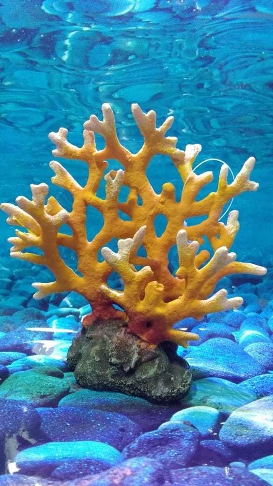
Coral Reef
Coral reefs are vibrant underwater ecosystems formed by the skeletons of tiny sea creatures called corals. They are home to diverse marine life, support fishing and tourism, and protect coastlines from erosion. However, they face threats from climate change, pollution, and overfishing. Coral reefs are often known as the "rainforests of the sea" because of their incredible biodiversity and the vast number of species they support.
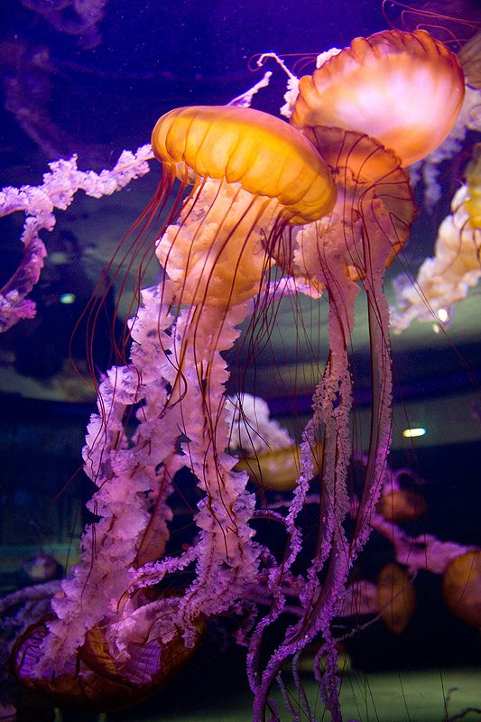
Jellyfish
Jellyfish are soft-bodied, umbrella-shaped sea creatures with long, stinging tentacles. They drift through the ocean's currents and can be found in all seas, from the surface to the deep ocean. Some species of jellyfish can glow in the dark, thanks to bioluminescence.
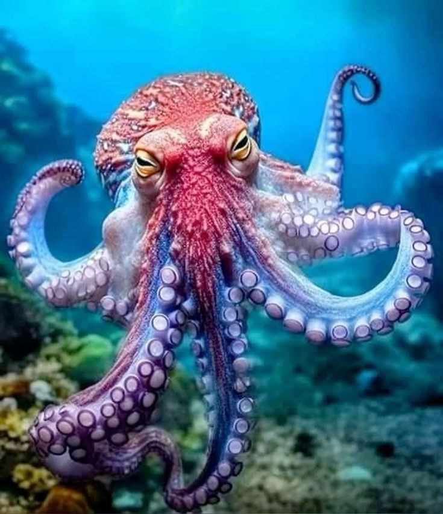
Octopus
Octopuses are intelligent sea creatures with eight arms covered in suction cups. They can change color to blend in with their surroundings and have a soft, flexible body. Known for their problem-solving skills, octopuses can escape enclosures and solve puzzles. They live in oceans worldwide, from shallow waters to the deep sea.
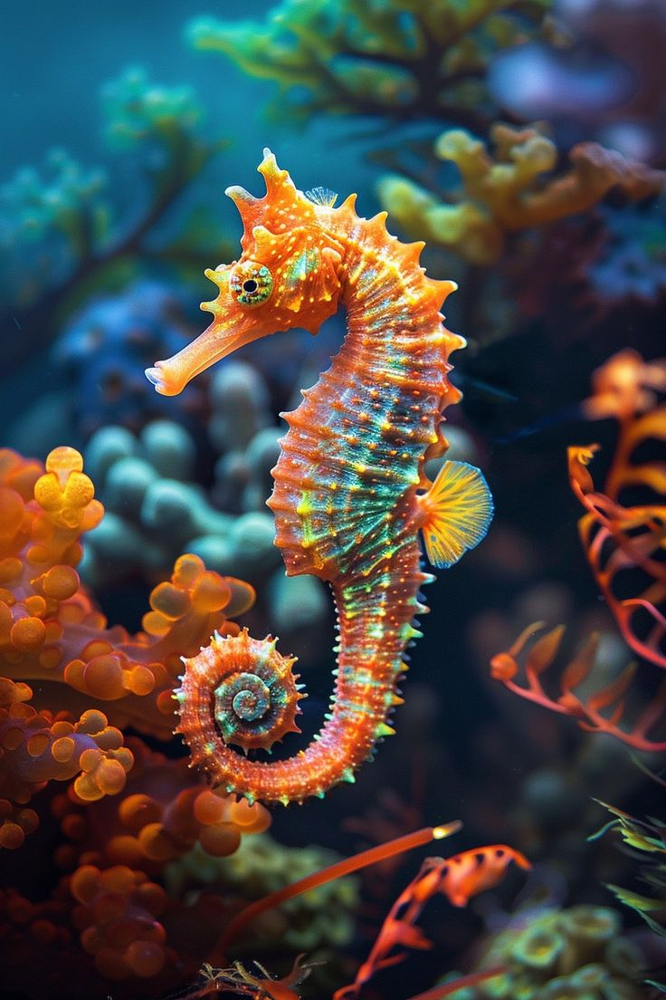
Seahorse
Seahorses are small fish with unique upright posture and horse-like heads. They swim upright, using a tiny dorsal fin to move and steer. Seahorses have prehensile tails that they use to cling to seagrass and coral. They are found in shallow, tropical waters around the world, and they are known for their intricate courtship rituals and the male's role in pregnancy and giving birth to their young.

Starfish
Starfish, also known as sea stars, are ocean creatures with a radial symmetry and typically five arms. Starfish move using tiny tube feet located on the underside of their arms, which also help them grip surfaces and capture prey. They are found in oceans worldwide, from shallow waters to the deep sea, and play important roles in marine ecosystems by controlling populations of prey species like mollusks and controlling algae growth.
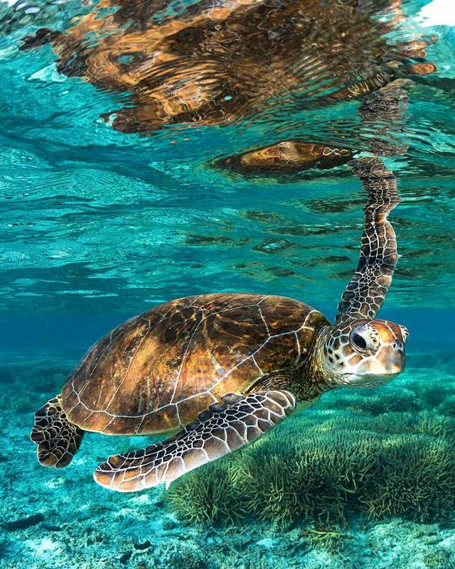
Sea Turtle
Sea turtles, often called marine turtles, are reptiles adapted to life in the ocean. Sea turtles can be found in all oceans except for the polar regions. They come ashore only to lay eggs in sandy beaches, a behavior known as nesting. These ancient creatures have been around for millions of years and are known for their long migrations between feeding and nesting grounds. Despite their impressive size and longevity, they face threats from habitat loss, pollution, and fishing activities.
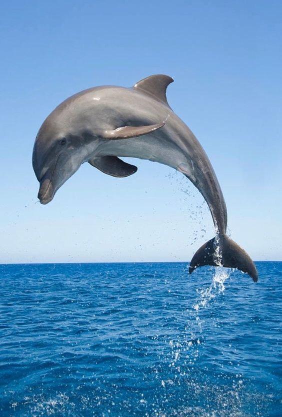
Dolphin
Dolphins are highly intelligent marine mammals. They are known for their playful behavior, social nature, and remarkable acrobatics. Found in oceans worldwide, dolphins communicate through a variety of clicks, whistles, and body movements. They primarily feed on fish and squid, using sophisticated hunting techniques and cooperation within their pods. Dolphins are also known for their friendly interactions with humans and have been the subject of extensive study due to their cognitive abilities.
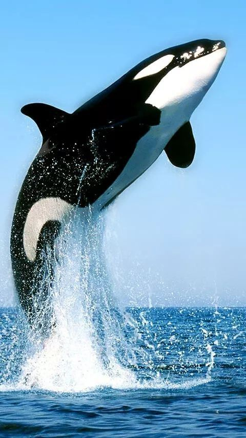
Killer Whale
Killer whales, or orcas, are the largest members of the dolphin family. They are known for their distinctive black and white coloring and are found in oceans worldwide. Killer whales are apex predators, feeding on a diverse diet that includes fish, seals, and even whales. They are highly social animals, living in complex family groups called pods. Orcas communicate using a variety of sounds and exhibit sophisticated hunting techniques and behaviors. They are also known for their intelligence, strong social bonds, and impressive physical abilities.
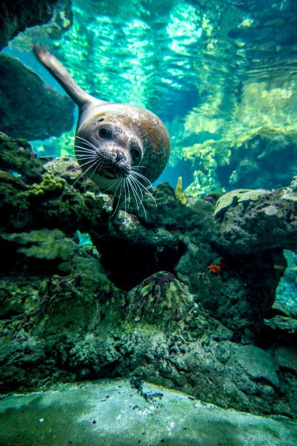
Seal
A seal is a marine mammal found in oceans and some freshwater environments. They have streamlined bodies and flippers that make them excellent swimmers. Seals are known for their playful behavior, often seen diving and leaping out of the water. They primarily feed on fish and other marine creatures. Seals have a layer of blubber to keep them warm in cold waters. They are also known for their distinctive calls and can often be heard barking or making other vocalizations.
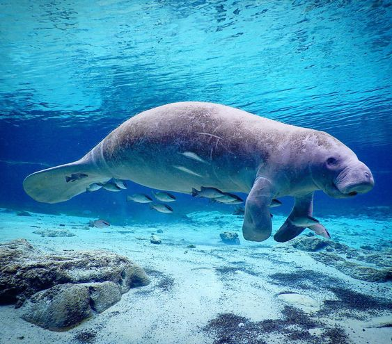
Manatee
A manatee is a large, gentle marine mammal often referred to as a sea cow. They have rounded bodies, paddle-like flippers, and a flat, horizontal tail. Manatees are slow swimmers and are typically found in warm, shallow waters such as rivers, bays, and coastal areas. They are herbivores, feeding mainly on seagrass and other aquatic plants. Manatees are known for their friendly and curious nature, often approaching boats and interacting with humans. They are also an important part of their ecosystem, helping to maintain healthy aquatic plant growth.
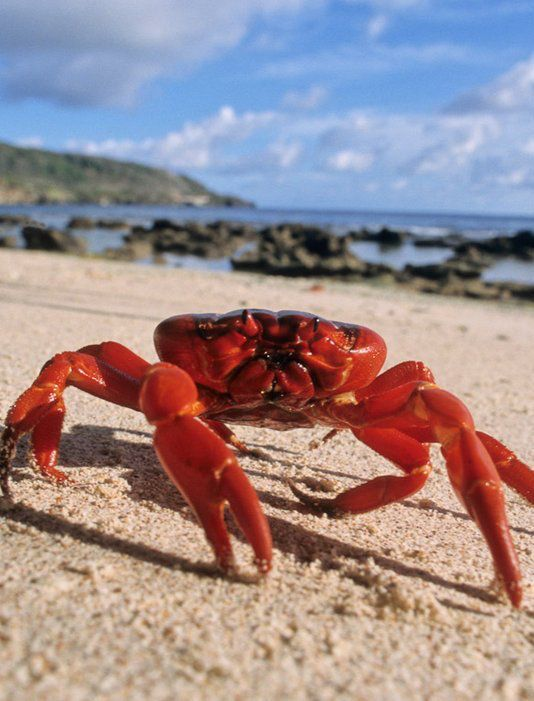
Crab
A crab is a small, hard-shelled sea creature with a flat, round body and ten legs, including two front claws. Crabs are found in oceans, freshwater, and on land. They use their claws for catching food and for defense. Crabs walk sideways and can often be seen scuttling along the beach or underwater. They eat a variety of foods, including algae, plankton, and small fish. Crabs are known for their tough exoskeleton, which they periodically shed as they grow.
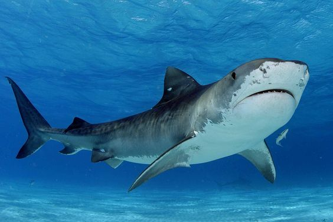
Shark
A shark is a large, powerful fish known for its streamlined body and sharp teeth. Sharks are found in oceans all over the world. They have excellent swimming abilities, thanks to their strong fins and tails. Sharks are predators, eating a variety of prey including fish, seals, and other marine animals. They have keen senses, particularly their sense of smell, which helps them detect food from great distances. Despite their fearsome reputation, many shark species are not dangerous to humans. Sharks play a crucial role in maintaining the balance of marine ecosystems.

Pufferfish
Pufferfish, also known as blowfish or fugu, are a group of fish known for their ability to inflate themselves when threatened. They are primarily found in tropical and subtropical ocean waters. When a pufferfish feels threatened, it ingests large amounts of water (or air) to expand its body, making it harder for predators to swallow. Pufferfish are covered in spines that can deter predators when they are inflated. Despite their cute appearance, pufferfish contain tetrodotoxin, a potent neurotoxin that is highly poisonous to predators and humans.
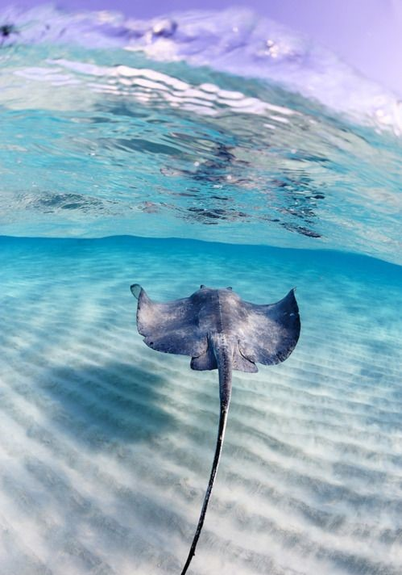
Stingray
Stingrays are flat-bodied fish, are known for their distinctive shape and long, whip-like tails, which often have venomous barbs. Stingrays are usually found in coastal tropical and subtropical marine waters, where they glide gracefully over the seabed. They feed on mollusks, crustaceans, and small fish, using their mouths located on the underside of their bodies. Stingrays are generally non-aggressive and use their barbed tails primarily for defense when they feel threatened.